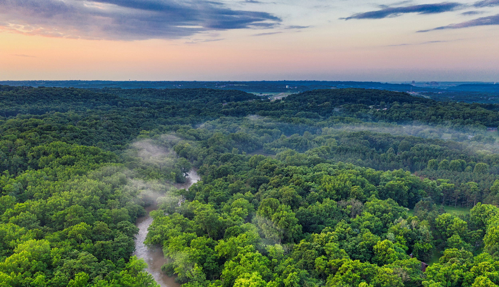

Choose
Pick a TreeTrack product that fits your everyday life.

TreeTrack turns everyday environmental support into real trees, ongoing care, and a digital journey you can follow.
TreeTrack connects people, products, and planting so environmental action feels closer to everyday life.
We’re starting small, with the hope that every action can grow into something bigger.
TreeTrack is an environmental initiative that brings people closer to real-world action. Instead of letting a contribution disappear into a single transaction, the journey continues through planting, care, and updates.
Our first campaign turns selected product purchases into support for tree planting in Jakarta. The people who participate can later follow a virtual tree journey connected to that campaign.
Learn more about TreeTrack →Our first campaign invites people to shop three simple products while contributing to a shared end-of-month tree planting effort in Jakarta.
The TreeTrack journey is designed to make participation simple and meaningful.
Pick a TreeTrack product that fits your everyday life.
Your purchase helps fund tree planting through the campaign.
After planting, follow your virtual tree as it grows through monthly updates.
TreeTrack #1 is framed around urban greening, climate action, and life on land.
Supporting tree planting and green spaces as part of everyday climate action.
Encouraging greener urban spaces and more community participation in Jakarta.
Supporting vegetation, ecological awareness, and a stronger relationship with urban nature.
Three starter products. One shared campaign.
Explore a simple interactive map of green areas and future TreeTrack development references.
TreeTrack uses green areas as a visual starting point for understanding where future community planting efforts could develop.
These green areas also help users understand that environmental improvement can begin from small, visible actions within their own communities.
Through this approach, TreeTrack aims to make tree planting more tangible, transparent, and connected to the community.
Open Tree Map →